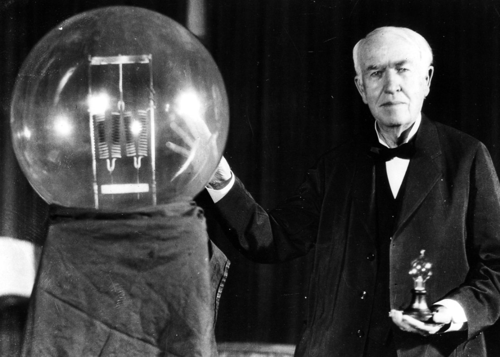
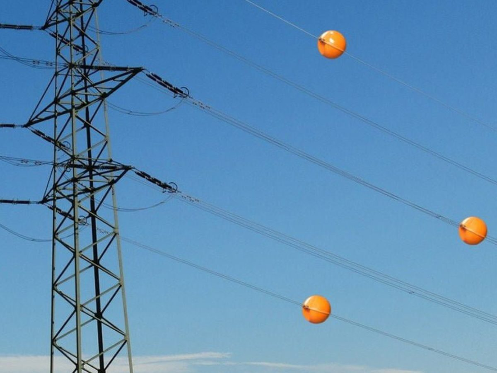
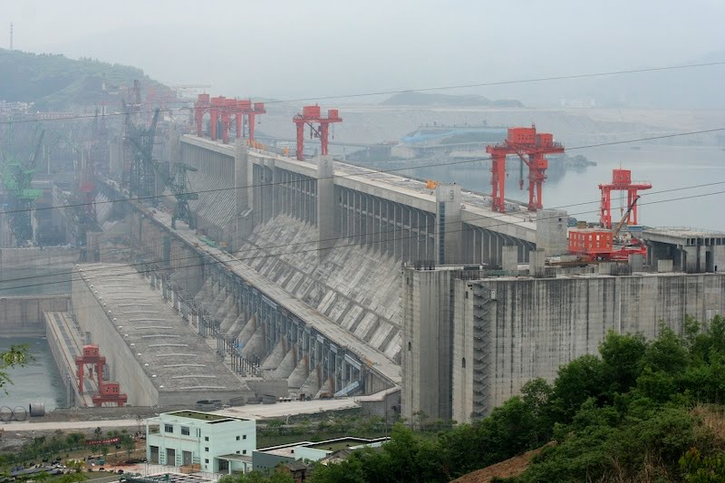

Curiosidades
A primeira Lâmpada
A primeira lâmpada que deu certo funcionou no dia 21 de outubro de 1879 e se manteve acesa por 45 horas. Ela foi feita com filamento de carvão dentro de bulbo de vidro de alto vácuo para favorecer a combustão, pois é a eletricidade à qual a lâmpada é submetida que produz a luz
A primeira descoberta do gênero havia sido registrada em 1802. O objetivo de Edison era substituir o gás, principal meio de iluminação no fim do século 17.
A luz elétrica, uma das comodiades que mais beneficiaram a vida das pessoas, não foi inventada em 1879 pelo norte-americano Thomas Edison, como se acreditou por muito tempo. Na verdade, alguns historiadores sustentam que houve mais de 20 inventores que tentaram bem antes. Por 7 décadas foram criados outros tipos de lâmpadas, mas nenhum modelo tivesse alcance comercial
Bolas laranjas nos fios elétricos
Você já deve ter reparado naquelas bolas no tom laranja presentes nos fios de alta tensão, certo? não, elas não são enfeites e nem foram parar lá por acaso. Seu nome técnico é "Esfera sinalizadora" e elas estão ali com objetivo previsto nas normas de Associação Brasileira de Nomras Técnicas (ABNT).
As esferas sinalizadoras são colocadas nos fios elétricos para evitar acidentes envolvendo aeronaves e helicópteros. Inclusive é por esse mesmo motivo que elas são laranjas. A cor bastante contraste e pode ser vista com facilidade mesmo de longe. Sabia dessa?
A maior usina hidrelétrica do mundo
Muita gente acredita que usina de itaipu, situada em Foz do Iguaçu, é a maior do mundo. Porém as pessoas estavam erradas, o lugar mais alto no pódio das hidrelétricas não é da brasileira, mas sim de uma hidrelétrica que fica na China.
A usina de três gargantas, localizada no Rio Yang Tsé, é a maior usina hidrelétrica do planeta, e essa belezinha levou 19 anos para ficar pronta. Estima-se que a obra toda custou US$ 25 bilhões, e que mais de 40 mil trabalhadores tenham sido necessários para execução do projeto da majestosa e controversa estrutura. Quais serão os impactos desse tipo de construção no meio ambiente em longo prazo? Só o futuro dirá...